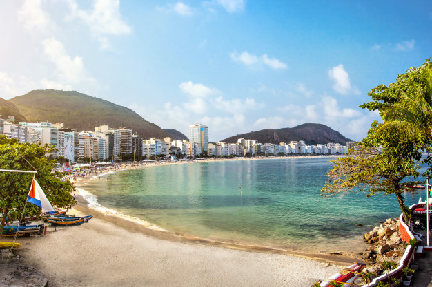
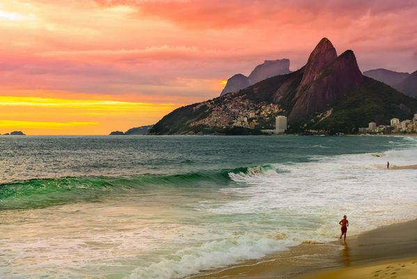

RIO DE JANEIRO
Río de Janeiro es una enorme ciudad costera de Brasil, famosa por sus playas de Copacabana e Ipanema, la estatua del Cristo Redentor de 38 m de alto sobre el cerro del Corcovado y el morro Pan de Azúcar, una cima de granito con teleféricos que ascienden a su cima. La ciudad también es conocida por sus extensas favelas. El estridente festival del Carnaval, con desfiles de carros alegóricos, extravagantes disfraces y bailarines de samba, es considerado el más grande del mundo.

Andrea: Las actividades deportivas incluyen el vóleibol en la playa de Ipanema, el surf en Arpoador y el parapente desde el alto mirador Pedra Bonita. Las playas de arena se extienden desde la bahía de Guanabara hasta Barra en el oeste; todas ellas incluyen pistas de ciclismo y quioscos que venden agua de coco. El Parque Nacional de la Tijuca tiene montañas cubiertas de bosques tropicales llenas de cascadas, senderos de excursión y tucanes. Bandas de samba, forró y bossa nova se presentan en los bares del área de Lapa. En el Museo de Arte Moderno y el Museu de Arte do Rio, se exhibe arte moderno. Río fue la sede de los Juegos Olímpicos de 2016 y alberga el icónico Estadio Maracaná.
El Cristo Redentor o Cristo del Corcovado es una enorme estatua de Jesús de Nazaret con los brazos abiertos mostrando a la ciudad de Río de Janeiro, Brasil. La estatua tiene una altura de 30,1 metros sobre un pedestal de 8 metros.


El Pan de Azúcar es un morro situado en Río de Janeiro, Brasil, en la boca de la bahía de Guanabara sobre una península que sobresale en el océano Atlántico.
Famoso por su playa en forma de media luna, Copacabana es uno de los barrios más animados de Río y atrae a una gran variedad de lugareños y visitantes a las actividades que se realizan las 24 horas en sus playas y en el paseo marítimo de mosaicos. Entre los rascacielos con vista a la playa, se encuentran el hotel de estilo art déco Copacabana Palace y el imponente fuerte de Copacabana, sede de un museo militar. En el interior, apacibles cafés al aire libre y bares informales rodean las calles tranquilas.
El cerro del Corcovado es un monte brasileño de 713 metros ubicado en la ciudad de Río de Janeiro. En él se encuentra una escultura monumental, muy conocida, llamada el "Cristo Redentor", que representa a Cristo contemplando la ciudad de Río de Janeiro.
La moderna Ipanema es conocida por su icónica playa homónima, que atrae a una multitud diversa que toma el sol y socializa. La rocosa península de Pedra do Arpoador es un lugar popular para surfear que también ofrece senderos y vistas del atardecer. En el interior, las arboladas calles del barrio albergan boutiques de moda refinadas, restaurantes de gastronomía sofisticada y bares relajados donde se toca bossa nova.
